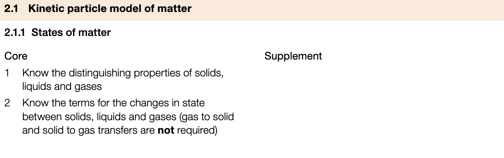
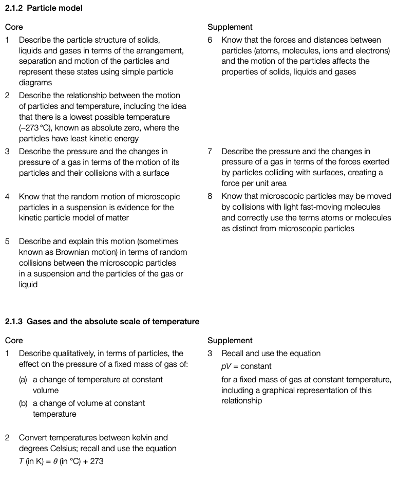
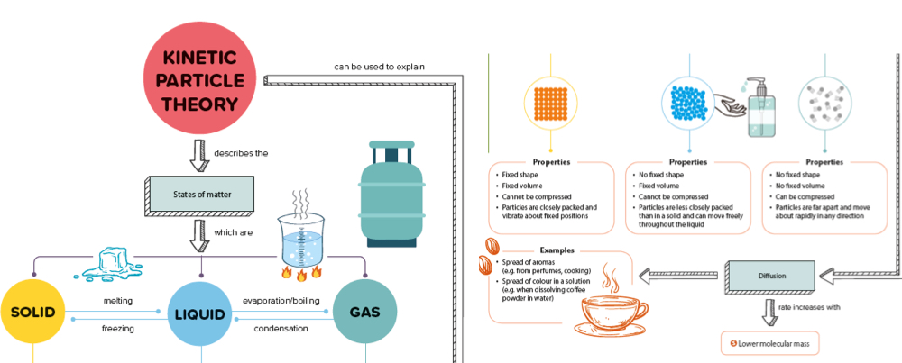
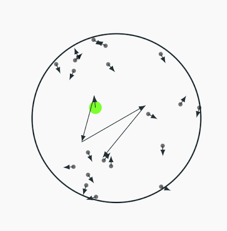
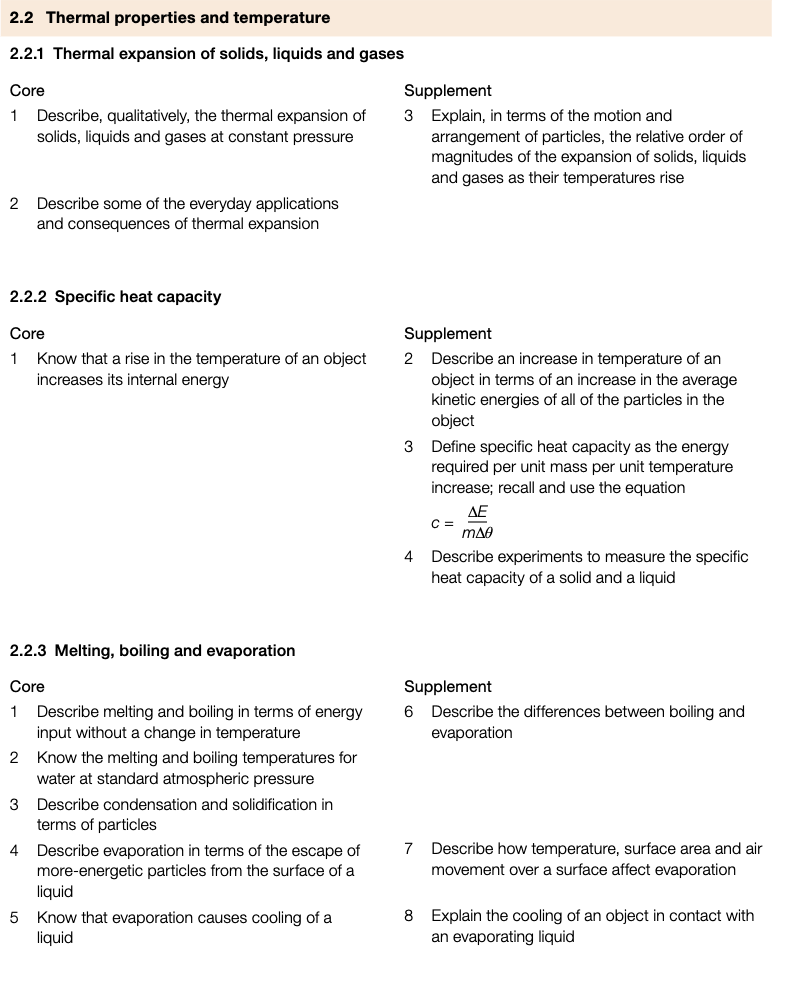

Thermal Physics
2.1 Kinetic Particle Model of Matter


- All matter consists of particles in constant motion (except at absolute zero)
- Explains behavior of solid, liquid, and gas states

| Property | Solid | Liquid | Gas |
|---|---|---|---|
| Arrangement | Fixed lattice | Random | Random |
| Movement | Vibrational | Sliding flow | Free random |
| Energy | Low | Medium | High |
| Density |
graph TD A[Solid] -->|Melting| B[Liquid] B -->|Freezing| A B -->|Vaporization| C[Gas] C -->|Condensation| B
- During phase transitions:
- Temperature remains constant
- Thermal energy changes potential energy (spacing) not kinetic energy Brownian Motion
Definition
Random motion of macroscopic particles caused by collisions with microscopic particles:

2.2 Thermal Properties and Temperature

Temperature ⇒ the average kinetic energy of particles in a substance
- On the thermodynamic (Kelvin) temperature scale, absolute zero refers to the lowest possible temperature
- This is equal to 0 K or −273 °C
- It is not possible to have a temperature lower than 0 K
- A temperature in Kelvin will never be negative
Absolute Zero
The temperature at which molecules in a substance have zero kinetic energy
- No more energy can be removed from a system at 0 K
- Space temperature ≈ 2.7 K (just above absolute zero)
- Atoms vibrate more → increased volume
- Reverse = thermal contraction
- Greatest in gases, smallest in solids
Consequences
- Slack overhead cables allow contraction on cold days
- Gaps in bridges allow expansion on hot days
Energy required to raise 1 kg of substance by 1°C (material property)
- = specific heat capacity (J/kg°C)
Water’s high → heats/cools slower than metals
Energy needed to raise an object’s temperature by 1°C (depends on mass)
- Unit: J/°C
Changes of State
- No temperature change during state transitions
- Energy formula:
- = specific latent heat (J/kg)
- Fusion (melting)
- Vaporization (boiling)
| State of Matter | Solid | Liquid | Gas |
|---|---|---|---|
| Particle arrangement | Fixed pattern (lattice structure) | Random | Random |
| Space between particles | No space | Some space | Large space |
| Particle movement | Vibrates around a fixed position | Flows past each other | Moves around at different speeds |
| Particle energy | Low | Medium | High |
| Substance shape | Fixed | Not fixed | Not fixed |
| Substance volume | Fixed | Fixed | Not fixed |
| Substance density | High | Medium | Low |
| 2D diagram of particle arrangement |  |  |  |
Heating Curve
Components
- Kinetic energy → temperature change ( KE = temp)
- Potential energy → state changes (no temp change)